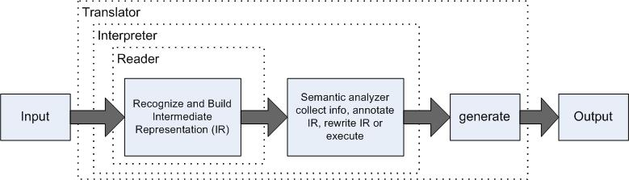

Penn State Great Valley
DSL Course - Lecture 6
Anatomy of Computer
Languages
A
language is just a set of valid sentences. Every language
application will have a parser (recognizer) component. The
whole
point to writing a grammar or Semantic Model is so you
can build a
program that recognizes sentences in that language.
Language
applications can be complicated and with anything complicated we want
to break them down into bite-size chunks. The goal is to get
the
components to fit together in a multistage pipeline that analyzes or
manipulates an input stream. The pipeline gradually converts
an
input sentence (valid input sentence) to a handy internal data
structure or translates it to a sentence in another language.
In
computing, a parser is one of the components in an interpreter or
compiler that checks for correct syntax and builds a data structure
(often some kind of parse tree, abstract syntax tree or other
hierarchical structure) implicit in the input tokens. The parser often
uses a separate lexical analyzer to create tokens from the sequence of
input characters. Parsers may be programmed by hand or may be
(semi-)automatically generated (in some programming languages) by a
tool.
Programming
Language Parsing
The
most common use of a parser is as a component of a compiler or
interpreter. This parses the source code of a computer programming
language to create some form of internal representation. Programming
languages tend to be specified in terms of a context-free grammar
because fast and efficient parsers can be written for them. Parsers are
written by hand or generated by parser generators.
Context-free
grammars are limited in the extent to which they can express all of the
requirements of a language. Informally, the reason is that the memory
of such a language is limited. The grammar cannot remember the presence
of a construct over an arbitrarily long input; this is necessary for a
language in which, for example, a name must be declared before it may
be referenced. More powerful grammars that can express this constraint,
however, cannot be parsed efficiently. Thus, it is a common strategy to
create a relaxed parser for a context-free grammar which accepts a
superset of the desired language constructs (that is, it accepts some
invalid constructs); later, the unwanted constructs can be filtered out.
Overview of Parsing Process
The
following example demonstrates the common case of parsing a computer
language with two levels of grammar: lexical and syntactic.
The
first stage is the token generation, or lexical analysis, by which the
input character stream is split into meaningful symbols defined by a
grammar of regular expressions. For example, a calculator program would
look at an input such as "12*(3+4)^2" and split it into the tokens 12,
*, (, 3, +, 4, ), ^, 2, each of which is a meaningful symbol in the
context of an arithmetic expression. The lexer would contain rules to
tell it that the characters *, +, ^, ( and ) mark the start of a new
token, so meaningless tokens like "12*" or "(3" will not be generated.
The
next stage is parsing or syntactic analysis, which is checking that the
tokens form an allowable expression. This is usually done with
reference to a context-free grammar which recursively defines
components that can make up an expression and the order in which they
must appear. However, not all rules defining programming languages can
be expressed by context-free grammars alone, for example type validity
and proper declaration of identifiers. These rules can be formally
expressed with attribute grammars.
The final phase is semantic
parsing or analysis, which is working out the implications of the
expression just validated and taking the appropriate action. In the
case of a calculator or interpreter, the action is to evaluate the
expression or program, a compiler, on the other hand, would generate
some kind of code. Attribute grammars can also be used to define these
actions.
As you can see, there are several tasks and components
that can be put together to create your parsing and translation
program. Some of these can be as simple as XML parsing while
others can be as complex as general programming language parsers.
We will stick to the easy stuff, if you want to dig deeper
feel
free.
Basic Parsing Patterns

The
basic idea is the reader recognizes the input and builds an
intermediate representation (IR) that feeds the rest of the
application. The intermediate stages form the semantic
analyzer
which figures out what the input means. At the end, a
generator
emits output based upon the IR and what the application learned in the
intermediate stages.
There are four broad application categories to the pipeline
described above:
- Reader
- A reader builds a data structure from one or more input streams.
The input streams are usually text but can be binary data as
well. Examples include configuration file readers, program
analysis tools such as a method cross-reference tool, and class file
loaders.
- Translator or Rewriter - A translator
reads text or binary input and emits output conforming to the same or a
different language. It is essentially a combined reader and
generator. Examples include translators from extinct
programming
languages to modern languages, wiki to HTML translators, refactorers,
profilers that instrument code, log file report generators, pretty
printers, and macro preprocessors. Some translators, such as
assemblers and compilers, are so common that they warrant their own
subcategories.
- Interpreter - An interpreter reads, decodes, and
executes instructions. Interpreters range from simple
calculators
and POP protocol servers all the way up to programming language
implementations such as those for Java, Ruby, and Python.
- Generator - A generator walks an internal data
structure and emits output. Examples include
object-to-relational
database mapping tools, object serializers, source code generators, and
web page generators.
Parsing Input Sentences
Readers
The most basic reader component and probably something most of you have
already done in some form, most likely with XML. So here are
a couple of short examples with of parsing an XML file with Python.
This example uses Document object model:
from xml.dom import minidom, Node
def scanNode(node, level = 0):
msg = node.__class__.__name__
if node.nodeType ==
Node.ELEMENT_NODE:
msg += ",
tag: " + node.tagName
print(" " * level * 4, msg)
if node.hasChildNodes:
for child
in node.childNodes:
scanNode(child,
level + 1)
doc = minidom.parse('planets.xml')
scanNode(doc)
This example uses tree structure:
from xml.etree import ElementTree as etree
def main():
tree =
etree.parse("planets.xml")
root = tree.getroot()
print("root: ")
print(root)
for child in root:
print("
child: ")
print(child)
for
grandchild in child:
print("
grandchild: ")
print(grandchild)
if __name__ == "__main__":
# Someone is launching this
directly
main()
You can see from these two snippets of code that tools are available
for parsing and navigating XML in Python. Tools for XML
processing are available for most programming languages today.
The tricks come out when you want to create something outside of XML...
Translator or Re-Writer
A
translator is a program that maps input constructs to output
constructs. Sometimes we can do this purely with syntax.
For example, translating a scalar multiply like a x b in a
mathematics DSL to a*b in Java doesn't require semantic information.
But it's never quite that simple! If a DSL has
matrices (2D
arrays), we need to alter the translation based on type information.
For example, to translate matrix multiply A x B, we need to
generate a nested for
loop in Java.
Translators
vary in difficulty depending on a number of factors including the
relative order of input and output constructs, the presence of forward
references, whether we need to preserve comments and formating, sheer
input file size, and so on. Regardless of the translation
strategy, keep in mind an important design principle:
Translation
involves fully understanding each input phrase, picking an appropriate
output construct, and filling it with elements from the input model.
Trying to cleverly replace input symbols with output symbols rarely
works well. You end up with what we call a literal
translation
in a natural language. For example, faire un canard in French
means literally "to make a duck." The real translation is "to hit a
wrong note."
In a computer translator, to "understand" a phrase
means to syntactically and semantically analyze it. We
usually
have to create an input model like an Abstract Syntax Tree because we
can't always do semantic analysis properly as we parse, creating symbol
tables and compute expression types from the input model.
According to the needs of the task at hand, we compute
everything
we need to know about the input and then make a decision about mapping
an input phrase to an output phrase. Sometimes this take
several
passes.
Translation is a huge topic, and we can devote only
limited time and resources to it. Depending upon the
complexity
of your DSL will determine if you need to do more complicated
translations. Let's look a few of the most common translator
patterns:
Syntax-Directed
Translator
- This translator consists of a parser with embedded actions that
immediately generate output. The key distinguishing feature
is
that the syntax-directed translators don't build an internal
representation. They do everything in one pass.
Rule-Based
Translator
- Uses the DSL of a particular rule engine to specify a set of "this
goes to that" translation rules. Combined with a grammar
describing the input syntax, a rule engine can automatically perform
translations.
Model-Driven
Translator
- There are lots of variations within the model-driven translator
strategy, but they all have one thing in common: an internal
representation of the input. From the input model, a
translator
can emit output directly, build up strings, build up templates or build
up specialized output objects. Depending on the complexity of
the
translation, the translator might need multiple passes over the input
model before generation phase. Most industrial translators
use
the model-driven approach.
Interpreter
We have all heard
of the term "interpreter" in computer science. It is also
another
overloaded term. An interpreter normally means a computer
program
that executes, i.e. performs, instructions written in a programming
language. An interpreter may be a program that either
- executes the source code directly
- translates source code into some efficient intermediate
representation (code) and immediately executes this code
- explicitly executes stored precompiled code made by a
compiler which is part of the interpreter system
Early
versions of the Lisp programming language and Dartmouth BASIC would be
examples of type 1. Perl, Python, MATLAB, and Ruby are examples of type
2, while UCSD Pascal is type 3: Source programs are compiled ahead of
time and stored as machine independent code, which is then linked at
run-time and executed by an interpreter and/or compiler (for JIT
systems). Some systems, such as Smalltalk, contemporary versions of
BASIC, Java and others, may also combine styles 2 and 3.
For our
discussion here with DSLs we are really talking about #2 in that we
want to execute a program not written in machine language by
'interpreting' the program or translating it tot he equivalent program
in a language that already runs on that machine.
We will look at
two type of interpreters - high-level interpreters and low-level
interpreters. High-level interpreters directly execute source
code instructions or abstract syntax tree equivalent.
Low-level
interpreters execute instructions called bytecodes that are close to
the CPU machine instructions. High-level interpreters fall
into two basic interpreter design patterns:
syntax-directed
interpreters and tree-based interpreters.
There high-level
patterns are best suited to building DSLs rather than general-purpose
programming languages. Usually, simplicity and low cost
implementation trump execution efficiency for DSLs. This
leads to
simpler implementations and a natural tendency to use dynamically typed
languages because of the minimal machinery needed to interpret a
high-level language.
Essentially, an interpreter simulates an
idealized computer in software. Such "computers" have a
processor, code memory, data memory, and a stack. The
processor
pulls instructions from the code memory, decodes them, and executes
them. An instruction can read or write to the data memory or
onto
the stack. Function calls save return addresses so they can
return to the instruction following the function call.
There are three things to consider when building an interpreter:
- how to store the data
- how and when to track the symbols
- how to execute the instructions
Getting into the details of any interpreter is beyond the scope of this
lecture but I'll leave you with some of the common design patterns for
developing interpreters and you should see how prevalent interpreters
are in your day-to-day tools suite:
Syntax-Directed
Interpreter: directly executes source code without
building an intermediate representation and without translating into
another language. This pattern works best with small
languages that are really just lists of instructions and declarations.
It's not super-efficient but has the fewest components to
build.
Tree-Based
Interpreter: also directly executes source code without
building an intermediate representation and without translating into
another language. However, this pattern performs a
preprocessing pass to build and abstract syntax tree and scope tree.
It supports forward references. Before execution,
optimizations are performed, information from analysis is squirreled
away, or rewrites are done on the abstract syntax tree to change x to this.x. This pattern
is typically
faster than a source-level interpreter because it doesn't
waste time reparsing input. An entire subtree can
be skipped by moving a pointer instead of parsing over it.
Byte-Code Interpreters:
This is whole other category of interpreter and it is represents some
of the more industrial strength languages used today such as Java,
Python, Ruby 1.9+ and C#. There interpreters translate high-level
source code down into low-level instructions called bytecode
instructions. These bytecodes are then executed on an efficient
interpreter called a virtual machine (VM).
Generators
We've talked about translators and re-writers, you should be able to
come up with loads of examples of these tools. Generally, a
translators input to output relationship classifies it into one of two
overall categories in the translation taxonomy: either the output looks
like the input, or it does not. In the first case the translator
just tweaks the input, in the second case the output looks very
different from the input. In this case the translator might
condense the input into a report such as a set of source code metrics
or might generate Javadoc comments from Java source code. The
input is basically highly processed and reorganized.
So
what is a
generator and how is it different from what we have discussed?
Good question! This category usually generates and then
buffers up bits of translated input that is subsequently organizes into
larger and larger chunks, leading to the final chunk representing the
complete output. However, we can generate code in one of two
ways: straight from our translator or through a template.
Translation
Generation simply generates statements in the target source code from
the Semantic Model or Abstract Syntax Tree.
Template Generation is
exactly as its name implies, write a sample output file then when there
is something specific to a particular state or event you place special
markers that allow you to call out to the Semantic Model to generate
the appropriate code. This is similar to templated web pages with
tools like ASP and JSP. When you process the templates, it
replaces the template references with generated code.
With
Templated Generation you are driven by the structure of your output.
With Translation Generation, you may be driven by either input,
output or both.
Made 10 January 2012
by D Bartlett.